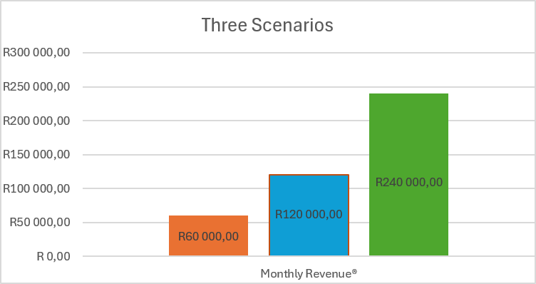
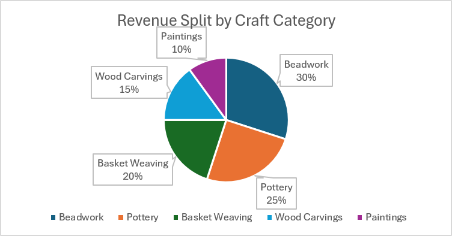

Featured Products
Traditional Clay Pot
R450
Zulu Beaded Necklace
R280
Handwoven Basket
R390
Wooden African Mask
R620
Support local artisans from rural communities and townships while shopping for unique handmade products delivered anywhere in the world.
Clay pots, bowls & ceramics
Traditional jewellery & accessories
Hand carved African art
Original artwork
Traditional woven baskets
Decorative handmade items
R450
R280
R390
R620
KwaZulu-Natal
Traditional Beadwork
Nomsa has been beading for 22 years and teaches young women in her community. Each necklace takes three days to make.
Limpopo
Pottery
Sipho fires clay pots in a traditional pit kiln using techniques passed down through four generations.
Eastern Cape
Basket Weaving
Thandi weaves baskets from ilala palm, a craft she learned from her grandmother and now passes on to her daughters.
CraftConnect SA is a digital marketplace built to give South African township and rural artisans direct access to local and international buyers. Today, most artisans rely on tourist foot traffic or middlemen who take large cuts, leaving them with little income and almost no online presence. Our platform solves this by providing a professionally hosted e-commerce storefront where artisans can list their handmade goods, tell their stories, and receive payment directly. The site is designed for craft lovers aged 25–55 in South Africa, Europe, and North America who value authentic handmade products and want to support ethical trade.
Location: London, United Kingdom
Occupation: Interior designer
Challenge: Wants authentic African décor but finds it hard to verify whether items are genuinely handmade or mass-produced imports.
How CraftConnect SA helps: Every product links to a verified artisan profile with their region, story, and craft method — so Sarah knows exactly who made her purchase and how.
CraftConnect SA uses a commission-based e-commerce model, chosen because it aligns our income with artisan success — we only earn when they do.
On every completed sale. Covers hosting, payment processing, and marketing.
Artisans can pay R50/month to appear on the homepage (optional).
Small markup on cross-border delivery handled by our courier partners.
Why commission and not subscriptions? Most township artisans cannot afford a monthly fee upfront. A commission model removes that barrier and only charges them once they have earned.
No factory-made products.
Every purchase supports South African artisans.
Ships to customers across the globe.
Safe and trusted checkout.
Artisans submit a photo and three keywords; an AI model drafts a product description in English and isiZulu, saving hours per listing.
A no-code chatbot answers common questions (shipping, returns, artisan info) 24/7 without hiring support staff.
Zapier/Make workflows automatically send order confirmations, update stock counts, and email artisans when a sale occurs.
Google Analytics + AI insights highlight which crafts sell best in which countries, guiding artisan production.
We investigated five existing platforms to learn what works and what gaps remain for South African artisans.
What it does well: Huge global audience, strong search.
Gap: High fees and no artisan verification; buyers cannot confirm authenticity.
Source: etsy.com (accessed 2026)
What it does well: Trust and fast delivery.
Gap: Nearly impossible for small SA artisans to join; no local payment options.
Source: amazon.com/handmade (accessed 2026)
What it does well: Dominant in SA, trusted locally.
Gap: Focused on mass-produced goods; handmade artisans get lost in the catalogue.
Source: takealot.com (accessed 2026)
What it does well: Wholesale African crafts to global retailers.
Gap: B2B only; individual artisans cannot sell directly to consumers.
Source: africaimports.com (accessed 2026)
What it does well: Curated SA handmade marketplace, strong brand.
Gap: Small artisan base, limited township/rural representation.
Source: hellopretty.co.za (accessed 2026)
What this told us: Global platforms don't serve SA artisans well, and local platforms don't prioritise township/rural makers. CraftConnect SA fills that gap by combining a trusted local marketplace with artisan storytelling and AI tools that remove the operational burden from the maker.
Based on our financial model, here is our projected first-year performance. (Charts generated in Microsoft Excel and exported as images.)

Bar chart comparing conservative (5 orders/day), expected (10 orders/day), and optimistic (20 orders/day) monthly revenue at an average order value of R400.

Pie chart showing projected contribution of Pottery, Beadwork, Baskets, Wood Carvings, and Paintings to total revenue.
★★★★★
"The quality exceeded my expectations!"
- Sarah (United Kingdom)★★★★★
"A beautiful handmade necklace."
- David (USA)★★★★★
"I'll definitely order again."
- Li Wei (China)